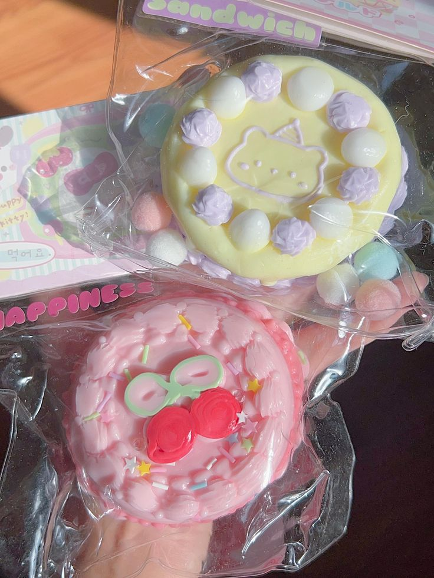
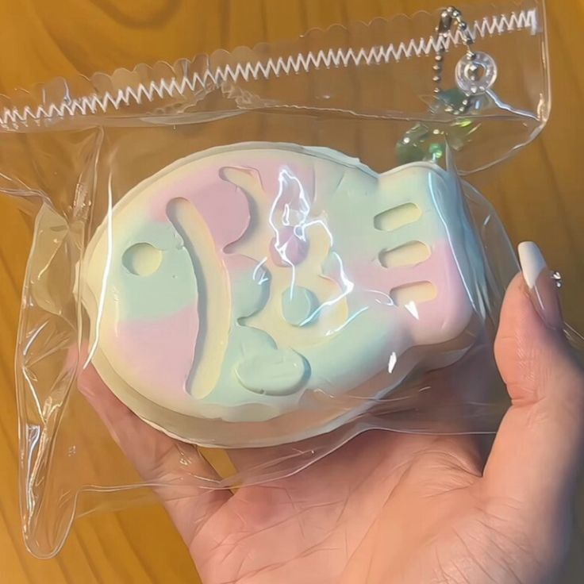
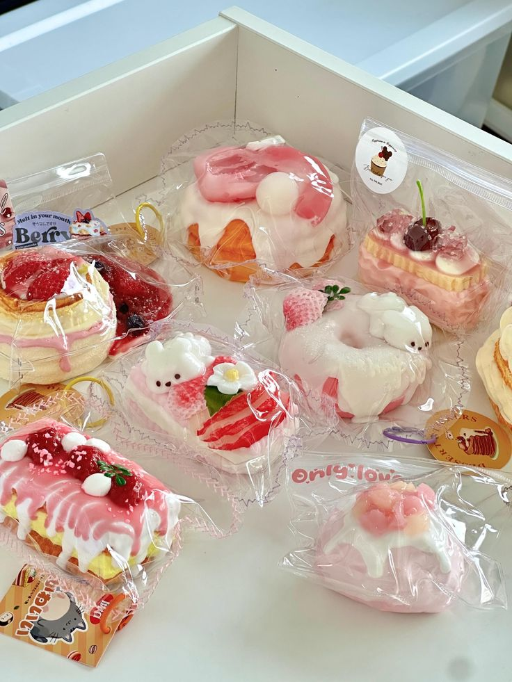
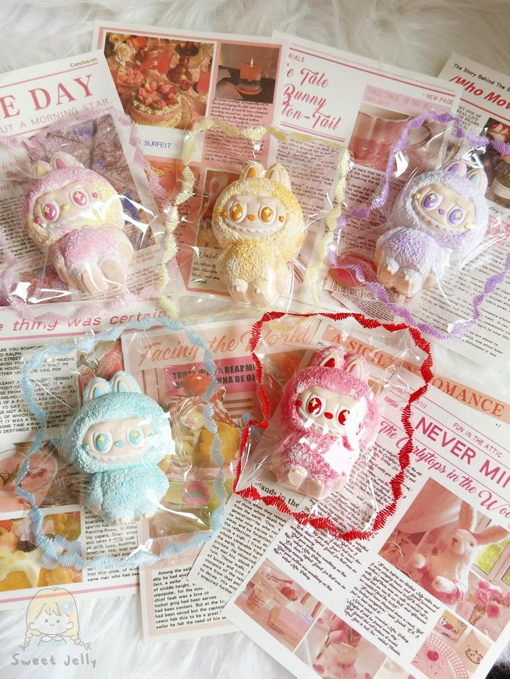
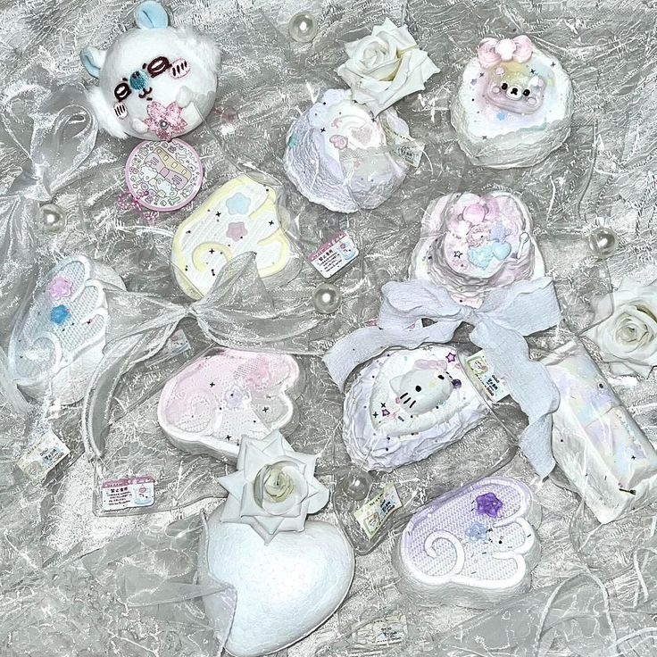
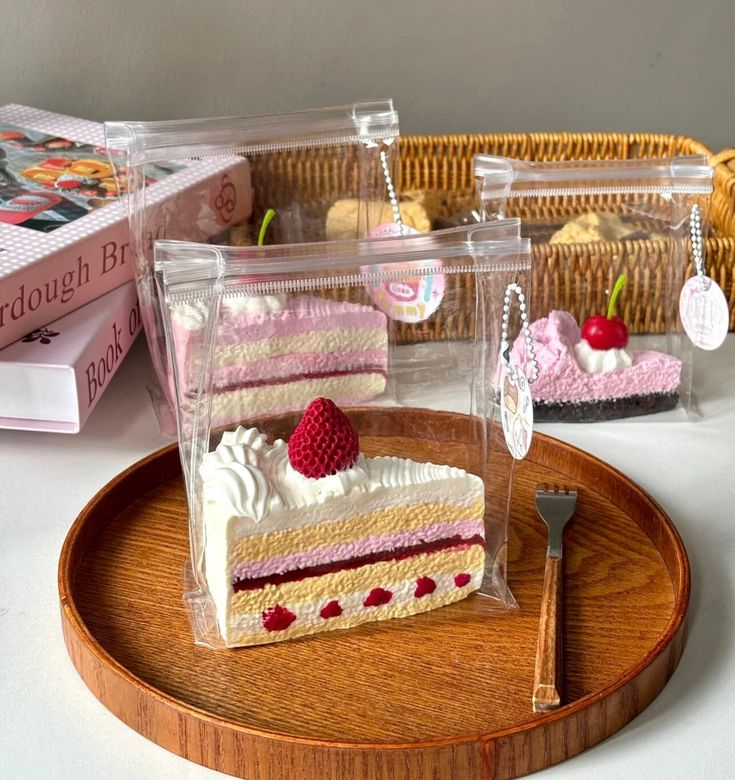
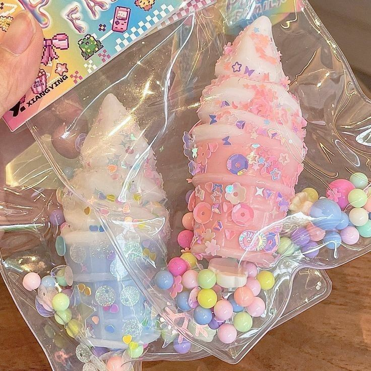
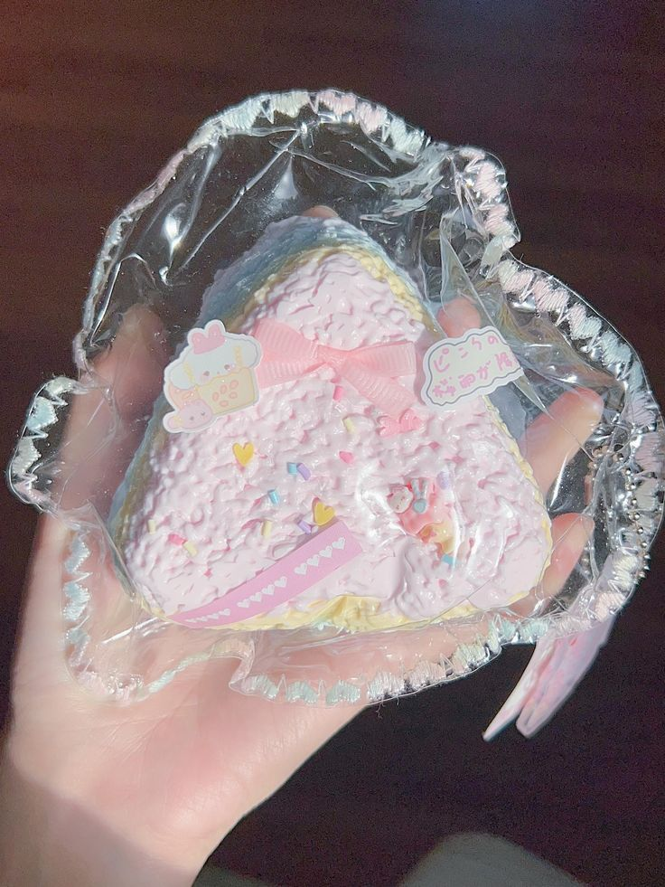
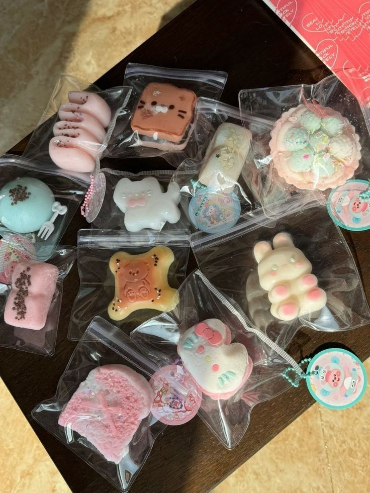

───୨ৎTaba Squishies — Origins & the Mid‑2010s Vibe─
Have you ever made slime? Does anyone remember slime era? Taba Squishies remind me of that golden slice of the mid‑2010s — when the internet was flooded with slime videos, the beginning of ASMR clips, and soft aesthetic edits. People crave sensory comfort, playful visuals, and something tactile to interact with through a screen.
Squishies captured that energy perfectly. They offered a soft, squeezable form of nostalgia: think pastel colors, satisfying smushes, and a mix of childhood comfort with intricate designs. Originally, Taba and similar brands set out to give people that familiar joy: something soft, squishy, and visually cute. Over time the range expanded: from food-shaped charms and simple toys to elaborate, art‑style squishy masterpieces.
───୨Squishies Born from Slime & ASMR?─
As slime videos dominated feeds and ASMR rose to popularity, squishies found a natural partner. I kinda believe that led to the pipeline of squishies. People were making slime in middle school and trading with friends. Some even made their own business. If I remember correctly, fidget toys grew in popularity around the same time. So it's not a surprise that squishies would be popular. Because of the silicone-base material that squishies have, they're durable and also aesthetically more pleasing compared to a stress ball. Social media platforms like YouTube, TikTok, and Instagram allow for more people to see such items. And with ASMR, a bread squishy clip will surely garner some interest.
───୨ৎDesign & Aesthetics — From Simple to Wild─
One of the things I love most about squishies is the design variety. On one end — the simple, minimal, elegant pieces. You may see a circle, heart, a square. Possibly decorated with some sprinkles or a drizzle. On the other end — the wild, maximalist, imaginative creations. Food-themed shapes, fantasy creatures, oversized designs, cute faces, glitter, charm attachments — pieces that feel like wearable art or small sculptures made to be displayed.
Personal expression is always important. There's something for everyone. I own a few squishies and not all are made same. Some can be the thick, clay-like dense ones while others are more watery. If that makes any sense. The textures vary, too — some are super soft and slow-rising, while others have a firmer, bouncier feel. Additionally, most may arrive in a thicker plastic bag to preserve the squishy. It also keeps the squishy from getting dirty. Some bags might also be specially stitched. Otherwise, most are in resealable bags for convenience.









───୨ৎHow to Choose & Display Your Squishies─
If you’re starting your squishy collection — or thinking about buying — there are a few things I always check:
- Texture & material: Softer, more pliable squishies feel nicer to hold and last longer.
- Water-like: Ultra-soft, easy to squeeze/ lighter handling
- Cream-like: Buttery soft and smooth/ medium-light handling/ everyday stress relief
- Jelly-like: Bouncy & resistant/ medium strength
- Playdough/clay-like: Firm & dense/ heavier handling
- Size & shape: Smaller squishies are easier to carry, larger ones make better display pieces.
- Design style: Choose shapes/colors that match your aesthetic — pastel, food-themed, minimal, or bold.
- Durability: Some squishies lose softness over time or peel. I prefer ones with good reviews or trusted makers.
For display: I like to keep some on a shelf (for decor), some inside a storage box, and a few on rotation in my bag or on my desk. It adds variety while keeping them safe.
───୨ৎCaring for Squishies─
To keep squishies looking and feeling nice over time:
- Store them away from direct sunlight — extended UV exposure can fade colors or ruin softness.
- Avoid sharp objects — squishies can tear or puncture.
- If they get dirty, wipe gently with a damp cloth; avoid harsh chemicals.
- If it gets sticky, you can wash with warm water and soap.
- Rotate the pieces regularly to prevent flattening or permanent dents.
- Keep them in a cool, dry place — heat can warp their shape or texture.
───୨ৎLinks (Credits)─
- Taba Squish GUIDE to FUN
- Taba Squishy Kit
- Pinterest source — SQUISHIES HEADER
- Pinterest source — SQUISHIES CONTENT
- Pinterest source — TAIYAKI
- Pinterest source — PEACH SQUISHY
- Pinterest source — LABUBU
- Pinterest source — WATERY
- Pinterest source — CAKE
- Pinterest source — ICE CREAM
- Pinterest source — ONIGIRI
- Pinterest source — MINIS